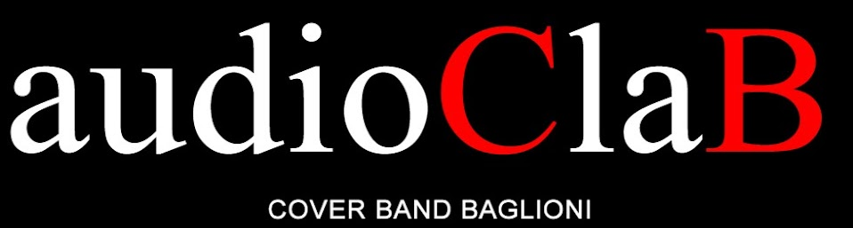

Gli AudioClaB sono un gruppo musicale nato dalla passione per Claudio Baglioni. Composto da talentuosi musicisti, riproducono con dedizione e maestria il repertorio dell'artista italiano, offrendo esperienze emozionali uniche.
La band ha iniziato anni fa grazie all'amicizia di membri condivisi dall'amore per la musica di Baglioni. Ognuno porta influenze diverse, arricchendo l'interpretazione dei brani.
Hanno conquistato un vasto pubblico con esibizioni che catturano l'anima delle canzoni di Baglioni. Sono considerati uno dei tributi più autentici e talentuosi.
Gli AudioClaB celebrano l'arte di Claudio Baglioni, portando avanti la sua eredità musicale attraverso esibizioni coinvolgenti. La loro musica continua a ispirare e toccare i cuori di chi ama Baglioni, dimostrando che il suo impatto sulla cultura musicale italiana è indelebile, grazie anche al loro straordinario tributo.
Non ci sono eventi in programma al momento.
Se hai un locale oppure un palco, non esitare a inviare un'email su: galberti4@libero.it
Seguici su: